Chicago Bears Stats & Storylines
Quick game recaps, player milestones, and fan takes on the Bears stories Chicago is talking about.
The 312 Rundown
Updated
- Record7-2
- NFC North1st
- Next: SaintsNov. 22
-
Game recap
Santos wins it at the gun, 27-24
The Bears turned it over five times and still beat Tampa Bay. Jaylon Johnson’s 67-yard pick-six was the swing play. That’s four wins in a row.
Source: Chicago Bears (opens in a new tab) -
QB watch
Ben Johnson calls Caleb’s 4 picks a one-off
Caleb Williams threw four interceptions against the Bucs. His coach called it an “aberration” and said the team will learn from the film. The Saints game is the first test.
Source: Yahoo Sports (opens in a new tab) -
Injury
Luther Burden enters concussion protocol
Burden led the team with 7 catches, 97 yards, and a touchdown before a helmet-to-helmet hit. The bye gives him two weeks to recover. It also adds fuel to the WR1 debate below.
Source: NBC Chicago (opens in a new tab)
What you’ll get
-
Game recaps
The final score, the turning point, and the stat that explains it.
-
Player spotlights
The numbers behind a breakout and what they could mean next.
-
Fan debates
A question worth getting into, win or lose.
Featured fan debate
What makes a Bears WR1?
Big plays get attention. Third downs build trust.
When you’re picking Chicago’s WR1, what matters most to you?